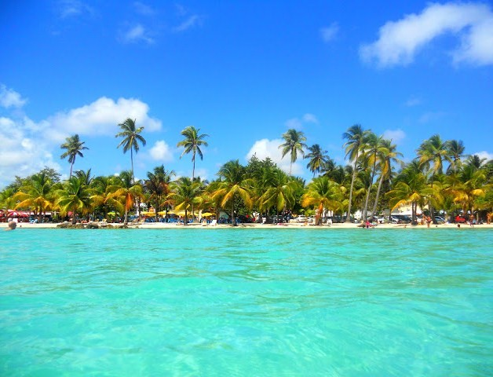
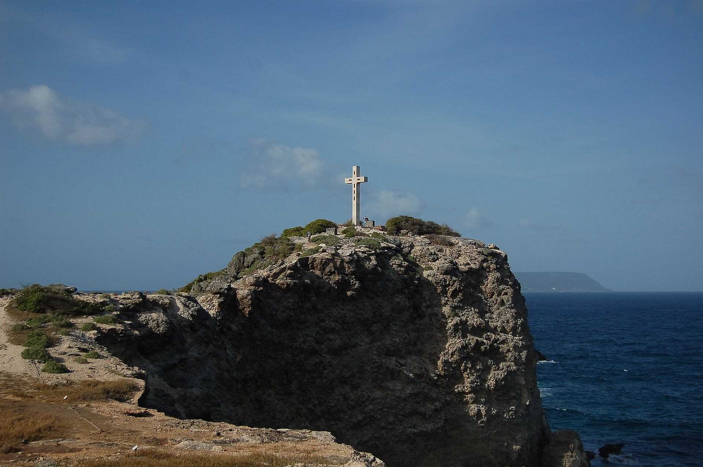
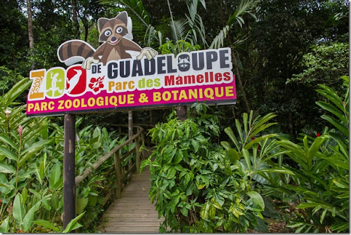

Bienvenue dans le jeu GeoGuesser !
Avant de commencer, voici quelques lieux emblématiques de la Guadeloupe. Essaye de les reconnaître pendant le jeu !
Le Lycée Charles Coeffin
Le Lycée Charles Coeffin est un établissement scolaire situé à Baie-Mahault, sur l'île de Grande-Terre. Il est réputé pour son enseignement et ses installations modernes, et se trouve à proximité de l'océan Atlantique.

La Plage de Sainte-Anne
La plage de Sainte-Anne est l'une des plus belles de la Guadeloupe, célèbre pour son sable blanc et ses eaux turquoise. Elle est située dans la commune de Saint-Anne, sur la pointe sud de Grande-Terre, et est très prisée des touristes et des locaux.

La Soufrière
La Soufrière est un volcan actif situé sur l'île de Basse-Terre. C'est l'un des volcans les plus imposants de la région, offrant des paysages impressionnants et des sentiers de randonnée populaires. Il domine le Parc National de la Guadeloupe.

La Pointe des Châteaux
La Pointe des Châteaux est un point de vue spectaculaire situé à l'extrémité de la côte est de Grande-Terre. Ce site offre des panoramas exceptionnels sur l'océan Atlantique, avec des formations rocheuses impressionnantes et des plages isolées.

Le Zoo de la Guadeloupe
Le Zoo de la Guadeloupe est situé à Basse-Terre et abrite une grande variété d'animaux locaux et exotiques. C'est un lieu de découverte et d'éducation à la biodiversité, où les visiteurs peuvent observer des animaux dans un environnement naturel.
